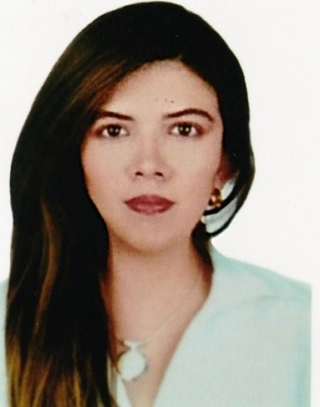

| Kelly "completar datos" | |
aporte actual |
| Lisette Aguilar Bueno | |
Hobbies y Pics |
| Roxana "completar datos | |
aporte actual |
| Marilia Quispe Alvarez | |
Bios |
| Zeldina Chalco Ormachea | |
Diseño de Logo Principal |
Nací en Arequipa el 10 de Diciembre de 1990, actualmente tengo 25 años. Soy egresada de la Escuela de Artes de la Universidad Nacional de San Agustín. Mi pasión es la música, ejecuto algunos instrumentos musicales como el corno francés, el saxofón y la trompeta. Actualmente estudio inglés y estoy aprendiendo a programar.
Nací en Cusco el 24 de Noviembrebre. Estudié Fotografía en el Instituto Thomas Jefferson, Mi pasión es la fotografía y la música
Nací en Arequipa el 23 de Noviembre de 1988, actualmente tengo 27 años. Soy egresada de la Universidad Católica San Pablo. Mi pasión es viajar y la fotografía, y quiero conocer nuevas culturas, costubres y hacer amigos por todo el mundo. Actualmente estoy aprendiendo a programar! :D
Nací en Tacna el 10 de Enero de 1994, mi sueño es convertirme en una coder.
Nací en Tacna el 18 de Enero de 1995. Estudié electricidad en Senati, pero mi sueño es ser una Coder.
Progresar constantemente, hasta alcanzar el primer lugar en el podio, realizando siempre un trabajo en equipo